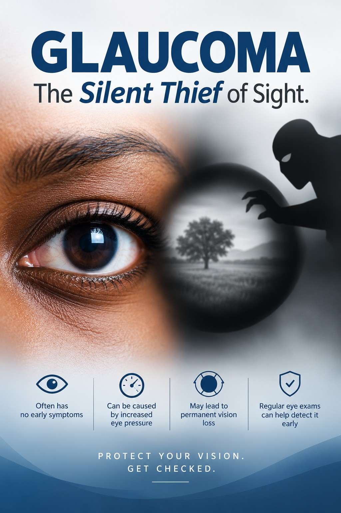
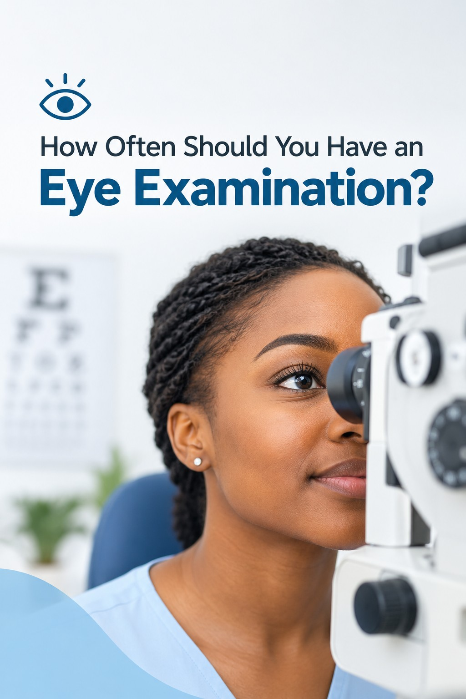

Glaucoma The Silent Thief of Sight.
Glaucoma can damage your vision gradually — without obvious warning signs. By the time you notice symptoms, the damage may already be done.
Read MoreEye Care Tips And Medical Insights

Glaucoma can damage your vision gradually — without obvious warning signs. By the time you notice symptoms, the damage may already be done.
Read More
Your eyes may feel perfectly healthy — but that doesn't always mean they are. Many eye conditions develop gradually, without noticeable symptoms.
Read MoreCan high blood pressure affect your vision? Most people think about the heart, brain, or kidneys — but your eyes are at risk too.
Read More